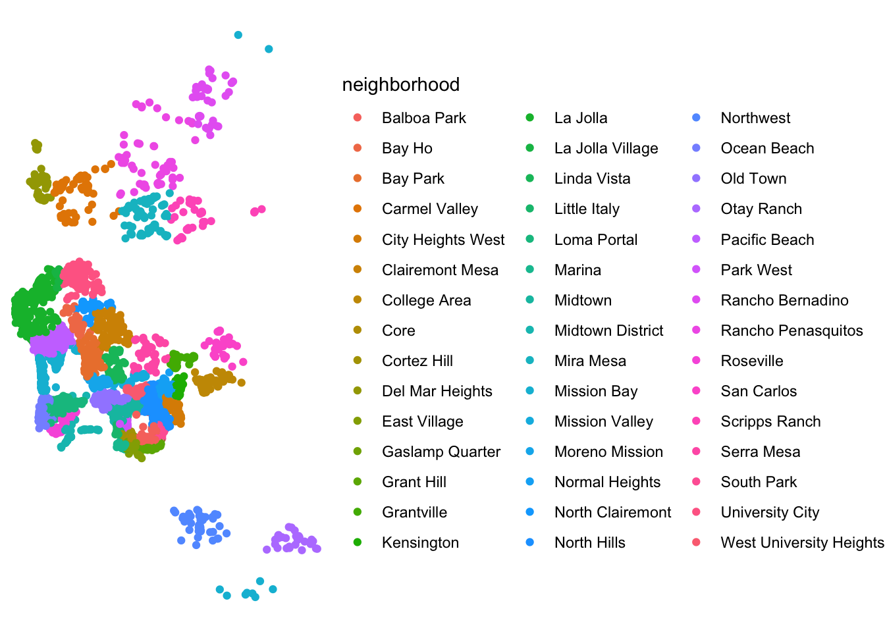

# Layout
library(tufte)
# For pretty table
library(knitr)
# For string parsing
library(stringr)
# Spatial Data management
library(rgdal)
# Pretty graphics
library(ggplot2)
# Pretty maps
library(ggmap)
# For all your interpolation needs
library(gstat)
# For data manipulation
library(dplyr)
# Spatial regression
library(spdep)6 Spatial dependence
This chapter is based on the following references, which are good follow-up’s on the topic:
- Chapter 11 of the GDS Book, by Rey, Arribas-Bel, and Wolf (forthcoming).
- Session III of Arribas-Bel (2014). Check the “Related readings” section on the session page for more in-depth discussions.
-
Anselin (2007), freely available to download [
pdf]. - The second part of this tutorial assumes you have reviewed Block E of Arribas-Bel (2019).
6.1 Dependencies
We will rely on the following libraries in this section, all of them included in ?sec-dependencies:
Before we start any analysis, let us set the path to the directory where we are working. We can easily do that with setwd(). Please replace in the following line the path to the folder where you have placed this file and where the house_transactions folder with the data lives.
setwd('.')6.2 Data
To explore ideas in spatial regression, we will the set of Airbnb properties for San Diego (US), borrowed from the “Geographic Data Science with Python” book (see here for more info on the dataset source). This covers the point location of properties advertised on the Airbnb website in the San Diego region.
Let us load the data:
db <- st_read('data/abb_sd/regression_db.geojson')Reading layer `regression_db' from data source
`/Users/franciscorowe/Dropbox/Francisco/Research/sdsm_book/smds/data/abb_sd/regression_db.geojson'
using driver `GeoJSON'
Simple feature collection with 6110 features and 19 fields
Geometry type: POINT
Dimension: XY
Bounding box: xmin: -117.2812 ymin: 32.57349 xmax: -116.9553 ymax: 33.08311
Geodetic CRS: WGS 84The table contains the followig variables:
names(db) [1] "accommodates" "bathrooms" "bedrooms"
[4] "beds" "neighborhood" "pool"
[7] "d2balboa" "coastal" "price"
[10] "log_price" "id" "pg_Apartment"
[13] "pg_Condominium" "pg_House" "pg_Other"
[16] "pg_Townhouse" "rt_Entire_home.apt" "rt_Private_room"
[19] "rt_Shared_room" "geometry" For most of this chapter, we will be exploring determinants and strategies for modelling the price of a property advertised in AirBnb. To get a first taste of what this means, we can create a plot of prices within the area of San Diego:
db %>%
ggplot(aes(color = price)) +
geom_sf() +
scale_color_viridis_c() +
theme_void()
6.3 Non-spatial regression, a refresh
Before we discuss how to explicitly include space into the linear regression framework, let us show how basic regression can be carried out in R, and how you can interpret the results. By no means is this a formal and complete introduction to regression so, if that is what you are looking for, the first part of Gelman and Hill (2006), in particular chapters 3 and 4, are excellent places to check out.
The core idea of linear regression is to explain the variation in a given (dependent) variable as a linear function of a series of other (explanatory) variables. For example, in our case, we may want to express/explain the price of a property advertised on AirBnb as a function of some of its characteristics, such as the number of people it accommodates, and how many bathrooms, bedrooms and beds it features. At the individual level, we can express this as:
\[ \log(P_i) = \alpha + \beta_1 Acc_i + \beta_2 Bath_i + \beta_3 Bedr_i + \beta_4 Beds_i + \epsilon_i \]
where \(P_i\) is the price of house \(i\), \(Acc_i\), \(Bath_i\), \(Bedr_i\) and \(Beds_i\) are the count of people it accommodates, bathrooms, bedrooms and beds that house \(i\) has, respectively. The parameters \(\beta_{1,2, 3, 4}\) give us information about in which way and to what extent each variable is related to the price, and \(\alpha\), the constant term, is the average house price when all the other variables are zero. The term \(\epsilon_i\) is usually referred to as the “error” and captures elements that influence the price of a house but are not accounted for explicitly. We can also express this relation in matrix form, excluding subindices for \(i\) as:
\[ \log(P) = \alpha + \beta_1 Acc + \beta_2 Bath + \beta_3 Bedr + \beta_4 Beds + \epsilon \] where each term can be interpreted in terms of vectors instead of scalars (wit the exception of the parameters \((\alpha, \beta_{1, 2, 3, 4})\), which are scalars). Note we are using the logarithm of the price, since this allows us to interpret the coefficients as roughly the percentage change induced by a unit increase in the explanatory variable of the estimate.
Remember a regression can be seen as a multivariate extension of bivariate correlations. Indeed, one way to interpret the \(\beta_k\) coefficients in the equation above is as the degree of correlation between the explanatory variable \(k\) and the dependent variable, keeping all the other explanatory variables constant. When you calculate simple bivariate correlations, the coefficient of a variable is picking up the correlation between the variables, but it is also subsuming into it variation associated with other correlated variables –also called confounding factors1. Regression allows you to isolate the distinct effect that a single variable has on the dependent one, once we control for those other variables.
1 EXAMPLE Assume that new houses tend to be built more often in areas with low deprivation. If that is the case, then \(NEW\) and \(IMD\) will be correlated with each other (as well as with the price of a house, as we are hypothesizing in this case). If we calculate a simple correlation between \(P\) and \(IMD\), the coefficient will represent the degree of association between both variables, but it will also include some of the association between \(IMD\) and \(NEW\). That is, part of the obtained correlation coefficient will be due not to the fact that higher prices tend to be found in areas with low IMD, but to the fact that new houses tend to be more expensive. This is because (in this example) new houses tend to be built in areas with low deprivation and simple bivariate correlation cannot account for that.
Practically speaking, running linear regressions in R is straightforward. For example, to fit the model specified in the equation above, we only need one line of code:
m1 <- lm('log_price ~ accommodates + bathrooms + bedrooms + beds', db)We use the command lm, for linear model, and specify the equation we want to fit using a string that relates the dependent variable (the log of the price, log_price) with a set of explanatory ones (accommodates, bathrooms, bedrooms, beds) by using a tilde ~ that is akin to the \(=\) symbol in the mathematical equation above. Since we are using names of variables that are stored in a table, we need to pass the table object (db) as well.
In order to inspect the results of the model, the quickest way is to call summary:
summary(m1)
Call:
lm(formula = "log_price ~ accommodates + bathrooms + bedrooms + beds",
data = db)
Residuals:
Min 1Q Median 3Q Max
-2.8486 -0.3234 -0.0095 0.3023 3.3975
Coefficients:
Estimate Std. Error t value Pr(>|t|)
(Intercept) 4.018133 0.013947 288.10 <2e-16 ***
accommodates 0.176851 0.005323 33.23 <2e-16 ***
bathrooms 0.150981 0.012526 12.05 <2e-16 ***
bedrooms 0.111700 0.012537 8.91 <2e-16 ***
beds -0.076974 0.007927 -9.71 <2e-16 ***
---
Signif. codes: 0 '***' 0.001 '**' 0.01 '*' 0.05 '.' 0.1 ' ' 1
Residual standard error: 0.5366 on 6105 degrees of freedom
Multiple R-squared: 0.5583, Adjusted R-squared: 0.558
F-statistic: 1929 on 4 and 6105 DF, p-value: < 2.2e-16A full detailed explanation of the output is beyond the scope of the chapter, but we will highlight the relevant bits for our main purpose. This is concentrated on the Coefficients section, which gives us the estimates for the \(\beta_k\) coefficients in our model. These estimates are the raw equivalent of the correlation coefficient between each explanatory variable and the dependent one, once the “polluting” effect of the other variables included in the model has been accounted for2. Results are as expected for the most part: houses tend to be significantly more expensive if they accommodate more people (an extra person increases the price by 17.7%, approximately), have more bathrooms (15.1%), or bedrooms (11.2%). Perhaps counter intuitively, an extra bed available seems to decrease the price by about -7.7%. However, keep in mind that this is the case, everything else equal. Hence, more beds per room and bathroom (ie. a more crowded house) is a bit cheaper.
2 Keep in mind that regression is no magic. We are only discounting the effect of other confounding factors that we include in the model, not of all potentially confounding factors.
6.4 Spatial regression: a (very) first dip
Spatial regression is about explicitly introducing space or geographical context into the statistical framework of a regression. Conceptually, we want to introduce space into our model whenever we think it plays an important role in the process we are interested in, or when space can act as a reasonable proxy for other factors we cannot but should include in our model. As an example of the former, we can imagine how houses at the seafront are probably more expensive than those in the second row, given their better views. To illustrate the latter, we can think of how the character of a neighborhood is important in determining the price of a house; however, it is very hard to identify and quantify “character” per se, although it might be easier to get at its spatial variation, hence a case of space as a proxy.
Spatial regression is a large field of development in the econometrics and statistics literature. In this brief introduction, we will consider two related but very different processes that give rise to spatial effects: spatial heterogeneity and spatial dependence. For more rigorous treatments of the topics introduced here, the reader is referred to Anselin (2003), Anselin and Rey (2014), and Gibbons, Overman, and Patacchini (2014).
6.5 Spatial heterogeneity
Spatial heterogeneity (SH) arises when we cannot safely assume the process we are studying operates under the same “rules” throughout the geography of interest. In other words, we can observe SH when there are effects on the outcome variable that are intrinsically linked to specific locations. A good example of this is the case of seafront houses above: we are trying to model the price of a house and, the fact some houses are located under certain conditions (i.e. by the sea), makes their price behave differently. This somewhat abstract concept of SH can be made operational in a model in several ways. We will explore the following two: spatial fixed-effects (FE); and spatial regimes, which is a generalization of FE.
Spatial FE
Let us consider the house price example from the previous section to introduce a more general illustration that relates to the second motivation for spatial effects (“space as a proxy”). Given we are only including two explanatory variables in the model, it is likely we are missing some important factors that play a role at determining the price at which a house is sold. Some of them, however, are likely to vary systematically over space (e.g. different neighborhood characteristics). If that is the case, we can control for those unobserved factors by using traditional dummy variables but basing their creation on a spatial rule. For example, let us include a binary variable for every neighbourhood, as provided by AirBnB, indicating whether a given house is located within such area (1) or not (0). Neighbourhood membership is expressed on the neighborhood column:
db %>%
ggplot(aes(color = neighborhood)) +
geom_sf() +
theme_void()
Mathematically, we are now fitting the following equation:
\[ \log(P_i) = \alpha_r + \beta_1 Acc_i + \beta_2 Bath_i + \beta_3 Bedr_i + \beta_4 Beds_i + \epsilon_i \]
where the main difference is that we are now allowing the constant term, \(\alpha\), to vary by neighbourhood \(r\), \(\alpha_r\).
Programmatically, we can fit this model with lm:
# Include `-1` to eliminate the constant term and include a dummy for every area
m2 <- lm(
'log_price ~ neighborhood + accommodates + bathrooms + bedrooms + beds - 1',
db
)
summary(m2)
Call:
lm(formula = "log_price ~ neighborhood + accommodates + bathrooms + bedrooms + beds - 1",
data = db)
Residuals:
Min 1Q Median 3Q Max
-2.4549 -0.2920 -0.0203 0.2741 3.5323
Coefficients:
Estimate Std. Error t value Pr(>|t|)
neighborhoodBalboa Park 3.994775 0.036539 109.33 <2e-16 ***
neighborhoodBay Ho 3.780025 0.086081 43.91 <2e-16 ***
neighborhoodBay Park 3.941847 0.055788 70.66 <2e-16 ***
neighborhoodCarmel Valley 4.034052 0.062811 64.23 <2e-16 ***
neighborhoodCity Heights West 3.698788 0.065502 56.47 <2e-16 ***
neighborhoodClairemont Mesa 3.658339 0.051438 71.12 <2e-16 ***
neighborhoodCollege Area 3.649859 0.064979 56.17 <2e-16 ***
neighborhoodCore 4.433447 0.058864 75.32 <2e-16 ***
neighborhoodCortez Hill 4.294790 0.057648 74.50 <2e-16 ***
neighborhoodDel Mar Heights 4.300659 0.060912 70.61 <2e-16 ***
neighborhoodEast Village 4.241146 0.032019 132.46 <2e-16 ***
neighborhoodGaslamp Quarter 4.473863 0.052493 85.23 <2e-16 ***
neighborhoodGrant Hill 4.001481 0.058825 68.02 <2e-16 ***
neighborhoodGrantville 3.664989 0.080168 45.72 <2e-16 ***
neighborhoodKensington 4.073520 0.087322 46.65 <2e-16 ***
neighborhoodLa Jolla 4.400145 0.026772 164.36 <2e-16 ***
neighborhoodLa Jolla Village 4.066151 0.087263 46.60 <2e-16 ***
neighborhoodLinda Vista 3.817940 0.063128 60.48 <2e-16 ***
neighborhoodLittle Italy 4.390651 0.052433 83.74 <2e-16 ***
neighborhoodLoma Portal 4.034473 0.036173 111.53 <2e-16 ***
neighborhoodMarina 4.046133 0.052178 77.55 <2e-16 ***
neighborhoodMidtown 4.032038 0.030280 133.16 <2e-16 ***
neighborhoodMidtown District 4.356943 0.071756 60.72 <2e-16 ***
neighborhoodMira Mesa 3.570523 0.061543 58.02 <2e-16 ***
neighborhoodMission Bay 4.251309 0.023318 182.32 <2e-16 ***
neighborhoodMission Valley 4.012410 0.083766 47.90 <2e-16 ***
neighborhoodMoreno Mission 4.028288 0.063342 63.59 <2e-16 ***
neighborhoodNormal Heights 3.791895 0.054730 69.28 <2e-16 ***
neighborhoodNorth Clairemont 3.498107 0.076432 45.77 <2e-16 ***
neighborhoodNorth Hills 3.959403 0.026823 147.61 <2e-16 ***
neighborhoodNorthwest 3.810201 0.078158 48.75 <2e-16 ***
neighborhoodOcean Beach 4.152695 0.032352 128.36 <2e-16 ***
neighborhoodOld Town 4.127737 0.046523 88.72 <2e-16 ***
neighborhoodOtay Ranch 3.722902 0.091633 40.63 <2e-16 ***
neighborhoodPacific Beach 4.116749 0.022711 181.27 <2e-16 ***
neighborhoodPark West 4.216829 0.050370 83.72 <2e-16 ***
neighborhoodRancho Bernadino 3.873962 0.080780 47.96 <2e-16 ***
neighborhoodRancho Penasquitos 3.772037 0.068808 54.82 <2e-16 ***
neighborhoodRoseville 4.070468 0.065299 62.34 <2e-16 ***
neighborhoodSan Carlos 3.935042 0.093205 42.22 <2e-16 ***
neighborhoodScripps Ranch 3.641239 0.085190 42.74 <2e-16 ***
neighborhoodSerra Mesa 3.912127 0.066630 58.71 <2e-16 ***
neighborhoodSouth Park 3.987019 0.060141 66.30 <2e-16 ***
neighborhoodUniversity City 3.772504 0.039638 95.17 <2e-16 ***
neighborhoodWest University Heights 4.043161 0.048238 83.82 <2e-16 ***
accommodates 0.150283 0.005086 29.55 <2e-16 ***
bathrooms 0.132287 0.011886 11.13 <2e-16 ***
bedrooms 0.147631 0.011960 12.34 <2e-16 ***
beds -0.074622 0.007405 -10.08 <2e-16 ***
---
Signif. codes: 0 '***' 0.001 '**' 0.01 '*' 0.05 '.' 0.1 ' ' 1
Residual standard error: 0.4971 on 6061 degrees of freedom
Multiple R-squared: 0.9904, Adjusted R-squared: 0.9904
F-statistic: 1.28e+04 on 49 and 6061 DF, p-value: < 2.2e-16Econometrically speaking, what the postcode FE we have introduced imply is that, instead of comparing all house prices across San Diego as equal, we only derive variation from within each postcode. In our particular case, estimating spatial FE in our particular example also gives you an indirect measure of area desirability: since they are simple dummies in a regression explaining the price of a house, their estimate tells us about how much people are willing to pay to live in a given area. We can visualise this “geography of desirability” by plotting the estimates of each fixed effect on a map:
# Extract neighborhood names from coefficients
nei.names <- m2$coefficients %>%
as.data.frame() %>%
row.names() %>%
str_replace("neighborhood", "")
# Set up as Data Frame
nei.fes <- data.frame(
coef = m2$coefficients,
nei = nei.names,
row.names = nei.names
) %>%
right_join(
db, by = c("nei" = "neighborhood")
)
# Plot
nei.fes %>%
st_as_sf() %>%
ggplot(aes(color = coef)) +
geom_sf() +
scale_color_viridis_c() +
theme_void()
We can see how neighborhoods in the left (west) tend to have higher prices. What we can’t see, but it is represented there if you are familiar with the geography of San Diego, is that the city is bounded by the Pacific ocean on the left, suggesting neighbourhoods by the beach tend to be more expensive.
Remember that the interpretation of a \(\beta_k\) coefficient is the effect of variable \(k\), given all the other explanatory variables included remain constant. By including a single variable for each area, we are effectively forcing the model to compare as equal only house prices that share the same value for each variable; in other words, only houses located within the same area. Introducing FE affords you a higher degree of isolation of the effects of the variables you introduce in your model because you can control for unobserved effects that align spatially with the distribution of the FE you introduce (by neighbourhood, in our case).
Spatial regimes
At the core of estimating spatial FEs is the idea that, instead of assuming the dependent variable behaves uniformly over space, there are systematic effects following a geographical pattern that affect its behaviour. In other words, spatial FEs introduce econometrically the notion of spatial heterogeneity. They do this in the simplest possible form: by allowing the constant term to vary geographically. The other elements of the regression are left untouched and hence apply uniformly across space. The idea of spatial regimes (SRs) is to generalize the spatial FE approach to allow not only the constant term to vary but also any other explanatory variable. This implies that the equation we will be estimating is: \[ \log(P_i) = \alpha_r + \beta_{1r} Acc_i + \beta_{2r} Bath_i + \beta_{3r} Bedr_i + \beta_{4r} Beds_i + \epsilon_i \]
where we are not only allowing the constant term to vary by region (\(\alpha_r\)), but also every other parameter (\(\beta_{kr}\)).
Also, given we are going to allow every coefficient to vary by regime, we will need to explicitly set a constant term that we can allow to vary:
db$one <- 1Then, the estimation leverages the capabilities in model description of R formulas:
# `:` notation implies interaction variables
m3 <- lm(
'log_price ~ 0 + (accommodates + bathrooms + bedrooms + beds):(neighborhood)',
db
)
summary(m3)
Call:
lm(formula = "log_price ~ 0 + (accommodates + bathrooms + bedrooms + beds):(neighborhood)",
data = db)
Residuals:
Min 1Q Median 3Q Max
-10.4790 -0.0096 1.0931 1.7599 6.1073
Coefficients:
Estimate Std. Error t value
accommodates:neighborhoodBalboa Park 0.063528 0.093237 0.681
accommodates:neighborhoodBay Ho -0.259615 0.335007 -0.775
accommodates:neighborhoodBay Park -0.355401 0.232720 -1.527
accommodates:neighborhoodCarmel Valley 0.129786 0.187193 0.693
accommodates:neighborhoodCity Heights West 0.447371 0.231998 1.928
accommodates:neighborhoodClairemont Mesa 0.711353 0.177821 4.000
accommodates:neighborhoodCollege Area -0.346152 0.188071 -1.841
accommodates:neighborhoodCore 0.125864 0.148417 0.848
accommodates:neighborhoodCortez Hill 0.715958 0.126562 5.657
accommodates:neighborhoodDel Mar Heights 0.829195 0.214067 3.874
accommodates:neighborhoodEast Village 0.214642 0.077394 2.773
accommodates:neighborhoodGaslamp Quarter 0.451443 0.197637 2.284
accommodates:neighborhoodGrant Hill 1.135176 0.167771 6.766
accommodates:neighborhoodGrantville 0.300907 0.280369 1.073
accommodates:neighborhoodKensington 0.668742 0.450243 1.485
accommodates:neighborhoodLa Jolla 0.520882 0.055887 9.320
accommodates:neighborhoodLa Jolla Village 0.566452 0.413185 1.371
accommodates:neighborhoodLinda Vista 0.523975 0.282219 1.857
accommodates:neighborhoodLittle Italy 0.603908 0.121899 4.954
accommodates:neighborhoodLoma Portal 0.487743 0.127870 3.814
accommodates:neighborhoodMarina 0.431384 0.172628 2.499
accommodates:neighborhoodMidtown 0.618058 0.087992 7.024
accommodates:neighborhoodMidtown District 0.430398 0.191682 2.245
accommodates:neighborhoodMira Mesa -0.018199 0.310167 -0.059
accommodates:neighborhoodMission Bay 0.440951 0.049454 8.916
accommodates:neighborhoodMission Valley 0.144530 0.507925 0.285
accommodates:neighborhoodMoreno Mission 0.100471 0.229460 0.438
accommodates:neighborhoodNormal Heights 0.413682 0.198584 2.083
accommodates:neighborhoodNorth Clairemont -0.242723 0.307090 -0.790
accommodates:neighborhoodNorth Hills 0.262840 0.083258 3.157
accommodates:neighborhoodNorthwest -0.229157 0.255656 -0.896
accommodates:neighborhoodOcean Beach 0.754771 0.079097 9.542
accommodates:neighborhoodOld Town 0.177176 0.159714 1.109
accommodates:neighborhoodOtay Ranch -0.333536 0.309545 -1.078
accommodates:neighborhoodPacific Beach 0.345475 0.057599 5.998
accommodates:neighborhoodPark West 0.909020 0.156013 5.827
accommodates:neighborhoodRancho Bernadino -0.118939 0.256750 -0.463
accommodates:neighborhoodRancho Penasquitos 0.121845 0.228456 0.533
accommodates:neighborhoodRoseville 0.316929 0.226110 1.402
accommodates:neighborhoodSan Carlos 0.191248 0.318706 0.600
accommodates:neighborhoodScripps Ranch 0.347638 0.127239 2.732
accommodates:neighborhoodSerra Mesa 0.495491 0.282281 1.755
accommodates:neighborhoodSouth Park 0.334378 0.256708 1.303
accommodates:neighborhoodUniversity City 0.107605 0.113883 0.945
accommodates:neighborhoodWest University Heights 0.190215 0.212040 0.897
bathrooms:neighborhoodBalboa Park 2.275321 0.225032 10.111
bathrooms:neighborhoodBay Ho 3.312231 0.530568 6.243
bathrooms:neighborhoodBay Park 2.231649 0.365655 6.103
bathrooms:neighborhoodCarmel Valley 1.191058 0.224138 5.314
bathrooms:neighborhoodCity Heights West 2.517235 0.550272 4.575
bathrooms:neighborhoodClairemont Mesa 3.737297 0.427366 8.745
bathrooms:neighborhoodCollege Area 3.370263 0.413479 8.151
bathrooms:neighborhoodCore 3.635188 0.490640 7.409
bathrooms:neighborhoodCortez Hill 1.631032 0.299654 5.443
bathrooms:neighborhoodDel Mar Heights 1.346206 0.342828 3.927
bathrooms:neighborhoodEast Village 2.600489 0.190932 13.620
bathrooms:neighborhoodGaslamp Quarter 3.183092 0.527615 6.033
bathrooms:neighborhoodGrant Hill 2.770976 0.416838 6.648
bathrooms:neighborhoodGrantville 2.177175 0.693599 3.139
bathrooms:neighborhoodKensington 1.284044 0.671482 1.912
bathrooms:neighborhoodLa Jolla 0.852667 0.099413 8.577
bathrooms:neighborhoodLa Jolla Village 0.984426 1.193870 0.825
bathrooms:neighborhoodLinda Vista 2.359895 0.393392 5.999
bathrooms:neighborhoodLittle Italy 2.600567 0.275834 9.428
bathrooms:neighborhoodLoma Portal 2.575164 0.249679 10.314
bathrooms:neighborhoodMarina 3.317139 0.656533 5.053
bathrooms:neighborhoodMidtown 0.899736 0.112205 8.019
bathrooms:neighborhoodMidtown District 3.143440 0.594875 5.284
bathrooms:neighborhoodMira Mesa 2.858280 0.512511 5.577
bathrooms:neighborhoodMission Bay 1.764929 0.122421 14.417
bathrooms:neighborhoodMission Valley 2.666000 1.365483 1.952
bathrooms:neighborhoodMoreno Mission 3.234512 0.557898 5.798
bathrooms:neighborhoodNormal Heights 3.505139 0.467965 7.490
bathrooms:neighborhoodNorth Clairemont 2.574847 0.613471 4.197
bathrooms:neighborhoodNorth Hills 2.584724 0.191541 13.494
bathrooms:neighborhoodNorthwest 2.877519 0.569924 5.049
bathrooms:neighborhoodOcean Beach 1.702208 0.207508 8.203
bathrooms:neighborhoodOld Town 2.249120 0.302755 7.429
bathrooms:neighborhoodOtay Ranch 2.818736 1.132794 2.488
bathrooms:neighborhoodPacific Beach 2.272803 0.130607 17.402
bathrooms:neighborhoodPark West 2.676739 0.308257 8.683
bathrooms:neighborhoodRancho Bernadino 0.856723 0.555198 1.543
bathrooms:neighborhoodRancho Penasquitos 0.677767 0.414569 1.635
bathrooms:neighborhoodRoseville 1.109625 0.360103 3.081
bathrooms:neighborhoodSan Carlos 2.489815 0.511232 4.870
bathrooms:neighborhoodScripps Ranch 2.459862 0.469601 5.238
bathrooms:neighborhoodSerra Mesa 2.968934 0.602807 4.925
bathrooms:neighborhoodSouth Park 2.895471 0.521793 5.549
bathrooms:neighborhoodUniversity City 3.125387 0.347825 8.986
bathrooms:neighborhoodWest University Heights 2.188257 0.390408 5.605
bedrooms:neighborhoodBalboa Park 0.605655 0.245384 2.468
bedrooms:neighborhoodBay Ho 0.836163 0.631871 1.323
bedrooms:neighborhoodBay Park 1.060944 0.430737 2.463
bedrooms:neighborhoodCarmel Valley 0.521954 0.480497 1.086
bedrooms:neighborhoodCity Heights West -0.272600 0.663983 -0.411
bedrooms:neighborhoodClairemont Mesa -0.742539 0.450344 -1.649
bedrooms:neighborhoodCollege Area -0.306621 0.410476 -0.747
bedrooms:neighborhoodCore -0.786470 0.395991 -1.986
bedrooms:neighborhoodCortez Hill 0.793039 0.380195 2.086
bedrooms:neighborhoodDel Mar Heights -0.071069 0.369070 -0.193
bedrooms:neighborhoodEast Village -0.186076 0.213572 -0.871
bedrooms:neighborhoodGaslamp Quarter -0.294024 0.342057 -0.860
bedrooms:neighborhoodGrant Hill -0.456825 0.425374 -1.074
bedrooms:neighborhoodGrantville 0.907259 0.770945 1.177
bedrooms:neighborhoodKensington -0.257195 1.009326 -0.255
bedrooms:neighborhoodLa Jolla -0.152098 0.133726 -1.137
bedrooms:neighborhoodLa Jolla Village 4.291700 1.882046 2.280
bedrooms:neighborhoodLinda Vista -0.485372 0.642684 -0.755
bedrooms:neighborhoodLittle Italy 0.057475 0.306357 0.188
bedrooms:neighborhoodLoma Portal -0.406484 0.250607 -1.622
bedrooms:neighborhoodMarina -0.831114 0.511626 -1.624
bedrooms:neighborhoodMidtown 0.696852 0.167900 4.150
bedrooms:neighborhoodMidtown District 0.010614 0.509151 0.021
bedrooms:neighborhoodMira Mesa -0.197692 0.780959 -0.253
bedrooms:neighborhoodMission Bay -0.330540 0.121602 -2.718
bedrooms:neighborhoodMission Valley 0.514998 1.295767 0.397
bedrooms:neighborhoodMoreno Mission -0.584689 0.596044 -0.981
bedrooms:neighborhoodNormal Heights -0.127744 0.391691 -0.326
bedrooms:neighborhoodNorth Clairemont 0.281306 0.695297 0.405
bedrooms:neighborhoodNorth Hills 0.380444 0.178477 2.132
bedrooms:neighborhoodNorthwest 0.288603 0.607295 0.475
bedrooms:neighborhoodOcean Beach -0.038069 0.207927 -0.183
bedrooms:neighborhoodOld Town -0.319724 0.375203 -0.852
bedrooms:neighborhoodOtay Ranch 0.015564 1.332279 0.012
bedrooms:neighborhoodPacific Beach -0.037912 0.139026 -0.273
bedrooms:neighborhoodPark West -0.696514 0.413881 -1.683
bedrooms:neighborhoodRancho Bernadino 1.034776 0.579798 1.785
bedrooms:neighborhoodRancho Penasquitos 0.674520 0.519260 1.299
bedrooms:neighborhoodRoseville 0.881011 0.592962 1.486
bedrooms:neighborhoodSan Carlos -0.394191 0.540343 -0.730
bedrooms:neighborhoodScripps Ranch 1.107455 0.336101 3.295
bedrooms:neighborhoodSerra Mesa 0.253001 0.620774 0.408
bedrooms:neighborhoodSouth Park -0.595844 0.407811 -1.461
bedrooms:neighborhoodUniversity City 0.203783 0.455767 0.447
bedrooms:neighborhoodWest University Heights 0.242873 0.359245 0.676
beds:neighborhoodBalboa Park 0.041556 0.173183 0.240
beds:neighborhoodBay Ho -0.402544 0.495241 -0.813
beds:neighborhoodBay Park 0.283958 0.410776 0.691
beds:neighborhoodCarmel Valley 0.150416 0.288268 0.522
beds:neighborhoodCity Heights West -0.217526 0.497878 -0.437
beds:neighborhoodClairemont Mesa -1.109581 0.308998 -3.591
beds:neighborhoodCollege Area 0.594892 0.312780 1.902
beds:neighborhoodCore 0.602559 0.277027 2.175
beds:neighborhoodCortez Hill -0.609996 0.143559 -4.249
beds:neighborhoodDel Mar Heights -0.708476 0.257299 -2.754
beds:neighborhoodEast Village 0.399909 0.148641 2.690
beds:neighborhoodGaslamp Quarter 0.240245 0.319910 0.751
beds:neighborhoodGrant Hill -1.315807 0.186724 -7.047
beds:neighborhoodGrantville -0.382590 0.469011 -0.816
beds:neighborhoodKensington 0.133474 0.664698 0.201
beds:neighborhoodLa Jolla 0.001347 0.085013 0.016
beds:neighborhoodLa Jolla Village -2.878676 1.020652 -2.820
beds:neighborhoodLinda Vista -0.142372 0.278211 -0.512
beds:neighborhoodLittle Italy -0.569868 0.099961 -5.701
beds:neighborhoodLoma Portal -0.255510 0.222956 -1.146
beds:neighborhoodMarina 0.024175 0.429466 0.056
beds:neighborhoodMidtown -0.346866 0.137915 -2.515
beds:neighborhoodMidtown District -0.464781 0.337775 -1.376
beds:neighborhoodMira Mesa 0.319934 0.426799 0.750
beds:neighborhoodMission Bay -0.108936 0.067105 -1.623
beds:neighborhoodMission Valley -0.502441 0.879795 -0.571
beds:neighborhoodMoreno Mission 0.492514 0.439355 1.121
beds:neighborhoodNormal Heights -0.532907 0.227211 -2.345
beds:neighborhoodNorth Clairemont 0.562363 0.704213 0.799
beds:neighborhoodNorth Hills -0.279430 0.123678 -2.259
beds:neighborhoodNorthwest 0.742017 0.474903 1.562
beds:neighborhoodOcean Beach -0.667651 0.137647 -4.850
beds:neighborhoodOld Town 0.459210 0.287008 1.600
beds:neighborhoodOtay Ranch 0.235723 0.983870 0.240
beds:neighborhoodPacific Beach -0.179242 0.087511 -2.048
beds:neighborhoodPark West -0.873297 0.225334 -3.876
beds:neighborhoodRancho Bernadino 0.378088 0.348640 1.084
beds:neighborhoodRancho Penasquitos 0.147457 0.344820 0.428
beds:neighborhoodRoseville -0.391529 0.328609 -1.191
beds:neighborhoodSan Carlos 0.115338 0.621666 0.186
beds:neighborhoodScripps Ranch -1.654484 0.338331 -4.890
beds:neighborhoodSerra Mesa -1.018812 0.705888 -1.443
beds:neighborhoodSouth Park 0.452815 0.406052 1.115
beds:neighborhoodUniversity City -0.345822 0.232779 -1.486
beds:neighborhoodWest University Heights 0.146128 0.364075 0.401
Pr(>|t|)
accommodates:neighborhoodBalboa Park 0.495668
accommodates:neighborhoodBay Ho 0.438397
accommodates:neighborhoodBay Park 0.126774
accommodates:neighborhoodCarmel Valley 0.488131
accommodates:neighborhoodCity Heights West 0.053861 .
accommodates:neighborhoodClairemont Mesa 6.40e-05 ***
accommodates:neighborhoodCollege Area 0.065740 .
accommodates:neighborhoodCore 0.396446
accommodates:neighborhoodCortez Hill 1.61e-08 ***
accommodates:neighborhoodDel Mar Heights 0.000108 ***
accommodates:neighborhoodEast Village 0.005565 **
accommodates:neighborhoodGaslamp Quarter 0.022395 *
accommodates:neighborhoodGrant Hill 1.45e-11 ***
accommodates:neighborhoodGrantville 0.283202
accommodates:neighborhoodKensington 0.137520
accommodates:neighborhoodLa Jolla < 2e-16 ***
accommodates:neighborhoodLa Jolla Village 0.170446
accommodates:neighborhoodLinda Vista 0.063414 .
accommodates:neighborhoodLittle Italy 7.47e-07 ***
accommodates:neighborhoodLoma Portal 0.000138 ***
accommodates:neighborhoodMarina 0.012484 *
accommodates:neighborhoodMidtown 2.40e-12 ***
accommodates:neighborhoodMidtown District 0.024780 *
accommodates:neighborhoodMira Mesa 0.953213
accommodates:neighborhoodMission Bay < 2e-16 ***
accommodates:neighborhoodMission Valley 0.776000
accommodates:neighborhoodMoreno Mission 0.661505
accommodates:neighborhoodNormal Heights 0.037279 *
accommodates:neighborhoodNorth Clairemont 0.429327
accommodates:neighborhoodNorth Hills 0.001602 **
accommodates:neighborhoodNorthwest 0.370103
accommodates:neighborhoodOcean Beach < 2e-16 ***
accommodates:neighborhoodOld Town 0.267333
accommodates:neighborhoodOtay Ranch 0.281298
accommodates:neighborhoodPacific Beach 2.12e-09 ***
accommodates:neighborhoodPark West 5.96e-09 ***
accommodates:neighborhoodRancho Bernadino 0.643202
accommodates:neighborhoodRancho Penasquitos 0.593817
accommodates:neighborhoodRoseville 0.161071
accommodates:neighborhoodSan Carlos 0.548479
accommodates:neighborhoodScripps Ranch 0.006311 **
accommodates:neighborhoodSerra Mesa 0.079258 .
accommodates:neighborhoodSouth Park 0.192775
accommodates:neighborhoodUniversity City 0.344762
accommodates:neighborhoodWest University Heights 0.369719
bathrooms:neighborhoodBalboa Park < 2e-16 ***
bathrooms:neighborhoodBay Ho 4.60e-10 ***
bathrooms:neighborhoodBay Park 1.11e-09 ***
bathrooms:neighborhoodCarmel Valley 1.11e-07 ***
bathrooms:neighborhoodCity Heights West 4.87e-06 ***
bathrooms:neighborhoodClairemont Mesa < 2e-16 ***
bathrooms:neighborhoodCollege Area 4.37e-16 ***
bathrooms:neighborhoodCore 1.45e-13 ***
bathrooms:neighborhoodCortez Hill 5.45e-08 ***
bathrooms:neighborhoodDel Mar Heights 8.71e-05 ***
bathrooms:neighborhoodEast Village < 2e-16 ***
bathrooms:neighborhoodGaslamp Quarter 1.71e-09 ***
bathrooms:neighborhoodGrant Hill 3.25e-11 ***
bathrooms:neighborhoodGrantville 0.001704 **
bathrooms:neighborhoodKensington 0.055892 .
bathrooms:neighborhoodLa Jolla < 2e-16 ***
bathrooms:neighborhoodLa Jolla Village 0.409651
bathrooms:neighborhoodLinda Vista 2.10e-09 ***
bathrooms:neighborhoodLittle Italy < 2e-16 ***
bathrooms:neighborhoodLoma Portal < 2e-16 ***
bathrooms:neighborhoodMarina 4.49e-07 ***
bathrooms:neighborhoodMidtown 1.28e-15 ***
bathrooms:neighborhoodMidtown District 1.31e-07 ***
bathrooms:neighborhoodMira Mesa 2.55e-08 ***
bathrooms:neighborhoodMission Bay < 2e-16 ***
bathrooms:neighborhoodMission Valley 0.050935 .
bathrooms:neighborhoodMoreno Mission 7.07e-09 ***
bathrooms:neighborhoodNormal Heights 7.88e-14 ***
bathrooms:neighborhoodNorth Clairemont 2.74e-05 ***
bathrooms:neighborhoodNorth Hills < 2e-16 ***
bathrooms:neighborhoodNorthwest 4.58e-07 ***
bathrooms:neighborhoodOcean Beach 2.85e-16 ***
bathrooms:neighborhoodOld Town 1.25e-13 ***
bathrooms:neighborhoodOtay Ranch 0.012863 *
bathrooms:neighborhoodPacific Beach < 2e-16 ***
bathrooms:neighborhoodPark West < 2e-16 ***
bathrooms:neighborhoodRancho Bernadino 0.122861
bathrooms:neighborhoodRancho Penasquitos 0.102129
bathrooms:neighborhoodRoseville 0.002070 **
bathrooms:neighborhoodSan Carlos 1.14e-06 ***
bathrooms:neighborhoodScripps Ranch 1.68e-07 ***
bathrooms:neighborhoodSerra Mesa 8.66e-07 ***
bathrooms:neighborhoodSouth Park 3.00e-08 ***
bathrooms:neighborhoodUniversity City < 2e-16 ***
bathrooms:neighborhoodWest University Heights 2.18e-08 ***
bedrooms:neighborhoodBalboa Park 0.013608 *
bedrooms:neighborhoodBay Ho 0.185782
bedrooms:neighborhoodBay Park 0.013803 *
bedrooms:neighborhoodCarmel Valley 0.277400
bedrooms:neighborhoodCity Heights West 0.681416
bedrooms:neighborhoodClairemont Mesa 0.099236 .
bedrooms:neighborhoodCollege Area 0.455100
bedrooms:neighborhoodCore 0.047070 *
bedrooms:neighborhoodCortez Hill 0.037033 *
bedrooms:neighborhoodDel Mar Heights 0.847309
bedrooms:neighborhoodEast Village 0.383650
bedrooms:neighborhoodGaslamp Quarter 0.390058
bedrooms:neighborhoodGrant Hill 0.282895
bedrooms:neighborhoodGrantville 0.239317
bedrooms:neighborhoodKensington 0.798872
bedrooms:neighborhoodLa Jolla 0.255422
bedrooms:neighborhoodLa Jolla Village 0.022623 *
bedrooms:neighborhoodLinda Vista 0.450143
bedrooms:neighborhoodLittle Italy 0.851191
bedrooms:neighborhoodLoma Portal 0.104857
bedrooms:neighborhoodMarina 0.104332
bedrooms:neighborhoodMidtown 3.37e-05 ***
bedrooms:neighborhoodMidtown District 0.983369
bedrooms:neighborhoodMira Mesa 0.800169
bedrooms:neighborhoodMission Bay 0.006583 **
bedrooms:neighborhoodMission Valley 0.691053
bedrooms:neighborhoodMoreno Mission 0.326658
bedrooms:neighborhoodNormal Heights 0.744334
bedrooms:neighborhoodNorth Clairemont 0.685798
bedrooms:neighborhoodNorth Hills 0.033080 *
bedrooms:neighborhoodNorthwest 0.634643
bedrooms:neighborhoodOcean Beach 0.854736
bedrooms:neighborhoodOld Town 0.394173
bedrooms:neighborhoodOtay Ranch 0.990680
bedrooms:neighborhoodPacific Beach 0.785097
bedrooms:neighborhoodPark West 0.092450 .
bedrooms:neighborhoodRancho Bernadino 0.074358 .
bedrooms:neighborhoodRancho Penasquitos 0.193994
bedrooms:neighborhoodRoseville 0.137390
bedrooms:neighborhoodSan Carlos 0.465713
bedrooms:neighborhoodScripps Ranch 0.000990 ***
bedrooms:neighborhoodSerra Mesa 0.683614
bedrooms:neighborhoodSouth Park 0.144046
bedrooms:neighborhoodUniversity City 0.654804
bedrooms:neighborhoodWest University Heights 0.499025
beds:neighborhoodBalboa Park 0.810374
beds:neighborhoodBay Ho 0.416352
beds:neighborhoodBay Park 0.489423
beds:neighborhoodCarmel Valley 0.601836
beds:neighborhoodCity Heights West 0.662195
beds:neighborhoodClairemont Mesa 0.000332 ***
beds:neighborhoodCollege Area 0.057226 .
beds:neighborhoodCore 0.029663 *
beds:neighborhoodCortez Hill 2.18e-05 ***
beds:neighborhoodDel Mar Heights 0.005914 **
beds:neighborhoodEast Village 0.007156 **
beds:neighborhoodGaslamp Quarter 0.452696
beds:neighborhoodGrant Hill 2.04e-12 ***
beds:neighborhoodGrantville 0.414683
beds:neighborhoodKensington 0.840859
beds:neighborhoodLa Jolla 0.987357
beds:neighborhoodLa Jolla Village 0.004812 **
beds:neighborhoodLinda Vista 0.608851
beds:neighborhoodLittle Italy 1.25e-08 ***
beds:neighborhoodLoma Portal 0.251837
beds:neighborhoodMarina 0.955112
beds:neighborhoodMidtown 0.011927 *
beds:neighborhoodMidtown District 0.168872
beds:neighborhoodMira Mesa 0.453518
beds:neighborhoodMission Bay 0.104565
beds:neighborhoodMission Valley 0.567962
beds:neighborhoodMoreno Mission 0.262337
beds:neighborhoodNormal Heights 0.019038 *
beds:neighborhoodNorth Clairemont 0.424572
beds:neighborhoodNorth Hills 0.023899 *
beds:neighborhoodNorthwest 0.118233
beds:neighborhoodOcean Beach 1.26e-06 ***
beds:neighborhoodOld Town 0.109654
beds:neighborhoodOtay Ranch 0.810658
beds:neighborhoodPacific Beach 0.040583 *
beds:neighborhoodPark West 0.000108 ***
beds:neighborhoodRancho Bernadino 0.278202
beds:neighborhoodRancho Penasquitos 0.668932
beds:neighborhoodRoseville 0.233515
beds:neighborhoodSan Carlos 0.852819
beds:neighborhoodScripps Ranch 1.03e-06 ***
beds:neighborhoodSerra Mesa 0.148987
beds:neighborhoodSouth Park 0.264826
beds:neighborhoodUniversity City 0.137433
beds:neighborhoodWest University Heights 0.688164
---
Signif. codes: 0 '***' 0.001 '**' 0.01 '*' 0.05 '.' 0.1 ' ' 1
Residual standard error: 1.81 on 5930 degrees of freedom
Multiple R-squared: 0.8759, Adjusted R-squared: 0.8721
F-statistic: 232.4 on 180 and 5930 DF, p-value: < 2.2e-16This allows us to get a separate constant term and estimate of the impact of each variable for every neighborhood
6.6 Spatial dependence
As we have just discussed, SH is about effects of phenomena that are explicitly linked to geography and that hence cause spatial variation and clustering of values. This encompasses many of the kinds of spatial effects we may be interested in when we fit linear regressions. However, in other cases, our interest is on the effect of the spatial configuration of the observations, and the extent to which that has an effect on the outcome we are considering. For example, we might think that the price of a house not only depends on the number of bathrooms it has but, if we take number of bathrooms as a proxy for size and status, also whether it is surrounded by other houses with many bathrooms. This kind of spatial effect is fundamentally different from SH in that is it not related to inherent characteristics of the geography but relates to the characteristics of the observations in our dataset and, specially, to their spatial arrangement. We call this phenomenon by which the values of observations are related to each other through distance spatial dependence (Anselin 1988).
Spatial Weights
There are several ways to introduce spatial dependence in an econometric framework, with varying degrees of econometric sophistication (see Anselin 2003 for a good overview). Common to all of them however is the way space is formally encapsulated: through spatial weights matrices (\(W\))3 These are \(NxN\) matrices with zero diagonals and every \(w_{ij}\) cell with a value that represents the degree of spatial connectivity/interaction between observations \(i\) and \(j\). If they are not connected at all, \(w_{ij}=0\), otherwise \(w_{ij}>0\) and we call \(i\) and \(j\) neighbors. The exact value in the latter case depends on the criterium we use to define neighborhood relations. These matrices also tend to be row-standardized so the sum of each row equals to one.
3 If you need to refresh your knowledge on spatial weight matrices, check Block E of Arribas-Bel (2019); Chapter 4 of Rey, Arribas-Bel, and Wolf (forthcoming); or the Spatial Weights Section of (rowe2022a?).
A related concept to spatial weight matrices is that of spatial lag. This is an operator that multiplies a given variable \(y\) by a spatial weight matrix:
\[ y_{lag} = W y \]
If \(W\) is row-standardized, \(y_{lag}\) is effectively the average value of \(y\) in the neighborhood of each observation. The individual notation may help clarify this:
\[ y_{lag-i} = \displaystyle \sum_j w_{ij} y_j \]
where \(y_{lag-i}\) is the spatial lag of variable \(y\) at location \(i\), and \(j\) sums over the entire dataset. If \(W\) is row-standardized, \(y_{lag-i}\) becomes an average of \(y\) weighted by the spatial criterium defined in \(W\).
Given that spatial weights matrices are not the focus of this tutorial, we will stick to a very simple case. Since we are dealing with points, we will use \(K\)-nn weights, which take the \(k\) nearest neighbors of each observation as neighbors and assign a value of one, assigning everyone else a zero. We will use \(k=50\) to get a good degree of variation and sensible results.
# Create knn list of each house
hnn <- db %>%
st_coordinates() %>%
as.matrix() %>%
knearneigh(k = 50)
# Create nb object
hnb <- knn2nb(hnn)
# Create spatial weights matrix (note it row-standardizes by default)
hknn <- nb2listw(hnb)We can inspect the weights created by simply typing the name of the object:
hknnCharacteristics of weights list object:
Neighbour list object:
Number of regions: 6110
Number of nonzero links: 305500
Percentage nonzero weights: 0.8183306
Average number of links: 50
Non-symmetric neighbours list
Weights style: W
Weights constants summary:
n nn S0 S1 S2
W 6110 37332100 6110 220.5032 24924.44Exogenous spatial effects
Let us come back to the house price example we have been working with. So far, we have hypothesized that the price of an AirBnb property in San Diego can be explained using information about its own characteristics, and the neighbourhood it belongs to. However, we can hypothesise that the price of a house is also affected by the characteristics of the houses surrounding it. Considering it as a proxy for larger and more luxurious houses, we will use the number of bathrooms of neighboring houses as an additional explanatory variable. This represents the most straightforward way to introduce spatial dependence in a regression, by considering not only a given explanatory variable, but also its spatial lag.
In our example case, in addition to including the number of bathrooms of the property, we will include its spatial lag. In other words, we will be saying that it is not only the number of bathrooms in a house but also that of the surrounding properties that helps explain the final price at which a house is advertised for. Mathematically, this implies estimating the following model:
\[ \log(P_i) = \alpha + \beta_1 Acc_i + \beta_2 Bath_i + \beta_3 Bedr_i + \beta_4 Beds_i+ \beta_5 Bath_{lag-i} + \epsilon_i \]
Let us first compute the spatial lag of bathrooms:
db$w_bathrooms <- lag.listw(hknn, db$bathrooms)And then we can include it in our previous specification. Note that we apply the log to the lag, not the reverse:
Call:
lm(formula = "log_price ~ accommodates + bedrooms + beds + bathrooms + w_bathrooms",
data = db)
Residuals:
Min 1Q Median 3Q Max
-2.8869 -0.3243 -0.0206 0.2931 3.5132
Coefficients:
Estimate Std. Error t value Pr(>|t|)
(Intercept) 3.579448 0.032337 110.692 <2e-16 ***
accommodates 0.173226 0.005233 33.100 <2e-16 ***
bedrooms 0.103116 0.012327 8.365 <2e-16 ***
beds -0.075071 0.007787 -9.641 <2e-16 ***
bathrooms 0.117268 0.012507 9.376 <2e-16 ***
w_bathrooms 0.353021 0.023572 14.976 <2e-16 ***
---
Signif. codes: 0 '***' 0.001 '**' 0.01 '*' 0.05 '.' 0.1 ' ' 1
Residual standard error: 0.5271 on 6104 degrees of freedom
Multiple R-squared: 0.574, Adjusted R-squared: 0.5736
F-statistic: 1645 on 5 and 6104 DF, p-value: < 2.2e-16As we can see, the lag is not only significative and positive, but its effect seems to be even larger that that of the property itself. Taken literally, this implies that the average number of bathrooms in AirBnb’s nearby has a larger effect on the final price of a given AirBnb than its own number of bathrooms. There are several ways to interpret this. One is that, if we take the spatial lag of bathrooms, as we said above, to be a proxy for the types of houses surrounding a property, this is probably a better predictor of how wealthy an area is than the number of bathrooms of a single property, which is more variable. If we also assume that the area where an AirBnb is located has a bigger effect on price than the number of bathrooms, we can start seeing an answer to the apparent puzzle.
A note on more advanced spatial regression
Introducing a spatial lag of an explanatory variable, as we have just seen, is the most straightforward way of incorporating the notion of spatial dependence in a linear regression framework. It does not require additional changes, it can be estimated with OLS, and the interpretation is rather similar to interpreting non-spatial variables. The field of spatial econometrics however is a much broader one and has produced over the last decades many techniques to deal with spatial effects and spatial dependence in different ways. Although this might be an over simplification, one can say that most of such efforts for the case of a single cross-section are focused on two main variations: the spatial lag and the spatial error model. Both are similar to the case we have seen in that they are based on the introduction of a spatial lag, but they differ in the component of the model they modify and affect.
The spatial lag model introduces a spatial lag of the dependent variable. In the example we have covered, this would translate into:
\[ \log(P_i) = \alpha + \rho \log(P_i) + \beta_1 Acc_i + \beta_2 Bath_i + \beta_3 Bedr_i + \beta_4 Beds_i + \epsilon_i \]
Although it might not seem very different from the previous equation, this model violates the exogeneity assumption, crucial for OLS to work.
Equally, the spatial error model includes a spatial lag in the error term of the equation:
\[ \log(P_i) = \alpha + \beta_1 Acc_i + \beta_2 Bath_i + \beta_3 Bedr_i + \beta_4 Beds_i + u_i \]
\[ u_i = u_{lag-i} + \epsilon_i \]
Again, although similar, one can show this specification violates the assumptions about the error term in a classical OLS model.
Both the spatial lag and error model violate some of the assumptions on which OLS relies and thus render the technique unusable. Much of the efforts have thus focused on coming up with alternative methodologies that allow unbiased, robust, and efficient estimation of such models. A survey of those is beyond the scope of this note, but the interested reader is referred to Anselin (1988), Anselin (2003), and Anselin and Rey (2014) for further reference.
6.7 Predicting house prices
So far, we have seen how to exploit the output of a regression model to evaluate the role different variables play in explaining another one of interest. However, once fit, a model can also be used to obtain predictions of the dependent variable given a new set of values for the explanatory variables. We will finish this session by dipping our toes in predicting with linear models.
The core idea is that once you have estimates for the way in which the explanatory variables can be combined to explain the dependent one, you can plug new values on the explanatory side of the model and combine them following the model estimates to obtain predictions. In the example we have worked with, you can imagine this application would be useful to obtain valuations of a house, given we know its characteristics.
Conceptually, predicting in linear regression models involves using the estimates of the parameters to obtain a value for the dependent variable:
\[ \bar{\log(P_i)} = \bar{\alpha} + \bar{\beta_1} Acc_i^* + \bar{\beta_2 Bath_i^*} + \bar{\beta_3} Bedr_i^* + \bar{\beta_4} Beds_i^* \] where \(\bar{\log{P_i}}\) is our predicted value, and we include the \(\bar{}\) sign to note that it is our estimate obtained from fitting the model. We use the \(^*\) sign to note that those can be new values for the explanatory variables, not necessarily those used to fit the model.
Technically speaking, prediction in linear models is relatively streamlined in R. Suppose we are given data for a new house which is to be put on the AirBnb platform. We know it accommodates four people, and has two bedrooms, three beds, and one bathroom. We also know that the surrounding properties have, on average, 1.5 bathrooms. Let us record the data first:
new.house <- data.frame(
accommodates = 4,
bedrooms = 2,
beds = 3,
bathrooms = 1,
w_bathrooms = 1.5
)To obtain the prediction for its price, we can use the predict method:
new.price <- predict(m5, new.house)
new.price 1
4.900168 Now remember we were using the log of the price as dependent variable. If we want to recover the actual price of the house, we need to take its exponent:
exp(new.price) 1
134.3123 According to our model, the house would be worth $134.3123448.
6.8 Questions
We will be using again the Madrid AirBnb dataset:
mad_abb <- st_read('./data/assignment_1_madrid/madrid_abb.gpkg')Reading layer `madrid_abb' from data source
`/Users/franciscorowe/Dropbox/Francisco/Research/sdsm_book/smds/data/assignment_1_madrid/madrid_abb.gpkg'
using driver `GPKG'
Simple feature collection with 18399 features and 16 fields
Geometry type: POINT
Dimension: XY
Bounding box: xmin: -3.86391 ymin: 40.33243 xmax: -3.556 ymax: 40.56274
Geodetic CRS: WGS 84colnames(mad_abb) [1] "price" "price_usd" "log1p_price_usd" "accommodates"
[5] "bathrooms_text" "bathrooms" "bedrooms" "beds"
[9] "neighbourhood" "room_type" "property_type" "WiFi"
[13] "Coffee" "Gym" "Parking" "km_to_retiro"
[17] "geom" In addition to those we have already seen, the columns to use here are:
-
neighbourhood: a column with the name of the neighbourhood in which the property is located
With this at hand, answer the following questions:
- Fit a baseline model with only property characteristics explaining the log of price
\[ \log(P_i) = \alpha + \beta_1 Acc_i + \beta_2 Bath_i + \beta_3 Bedr_i + \beta_4 Beds_i + \epsilon_i \]
- Augment the model with fixed effects at the neighbourhood level
\[ \log(P_i) = \alpha_r + \beta_1 Acc_i + \beta_2 Bath_i + \beta_3 Bedr_i + \beta_4 Beds_i + \epsilon_i \]
- [Optional] Augment the model with spatial regimes at the neighbourhood level:
\[ \log(P_i) = \alpha_r + \beta_{r1} Acc_i + \beta_{r2} Bath_i + \beta_{r3} Bedr_i + \beta_{r4} Beds_i + \epsilon_{ri} \]
- Fit a model that augments the baseline in 1. with the spatial lag of a variable you consider interesting. Motivate this choice. Note that to complete this, you will need to also generate a spatial weights matrix.
In each instance, provide a brief interpretation (no more thana few lines for each) that demonstrates your understanding of theunderlying concepts behind your approach.